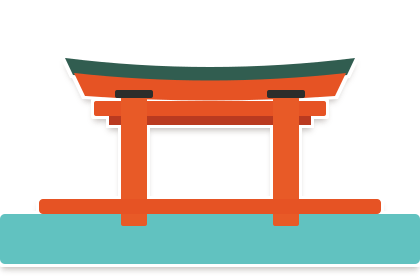

重要：このページは「現在GitHubに保存されている正本ファイル」をそのまま表示しています。
過去にチャット上で「確定」とした生成画像そのものではなく、その後こちらがSVGとして再構成して保存したものが含まれています。したがって、この一覧を見れば「確定時に見ていた画像」と「GitHub保存物」が一致しているかを直接確認できます。


現在の保存状況：8点すべてSVGです。今後は、この一覧で見た目を確認してから「正本」として扱う運用に切り替えます。生成画像を確定した場合は、その生成画像自体をPNG等で保存し、別形式へ描き直したものを勝手に正本扱いしません。